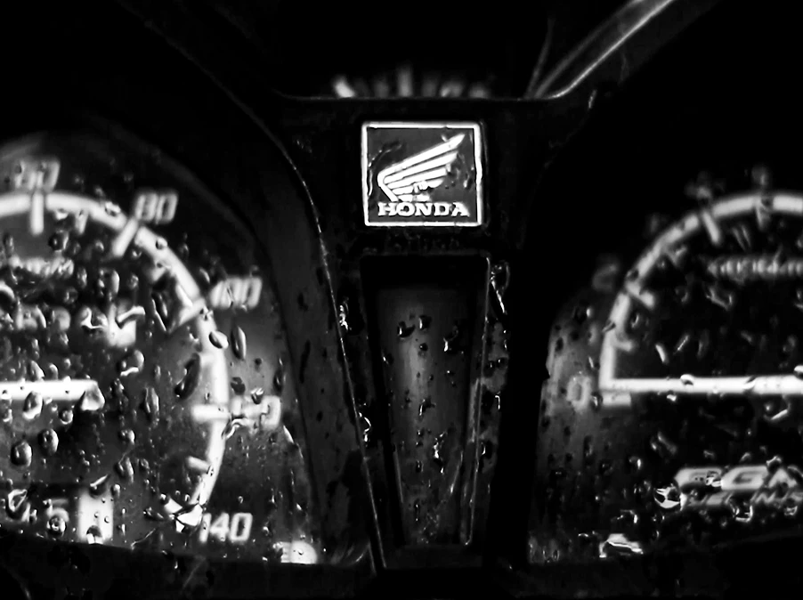
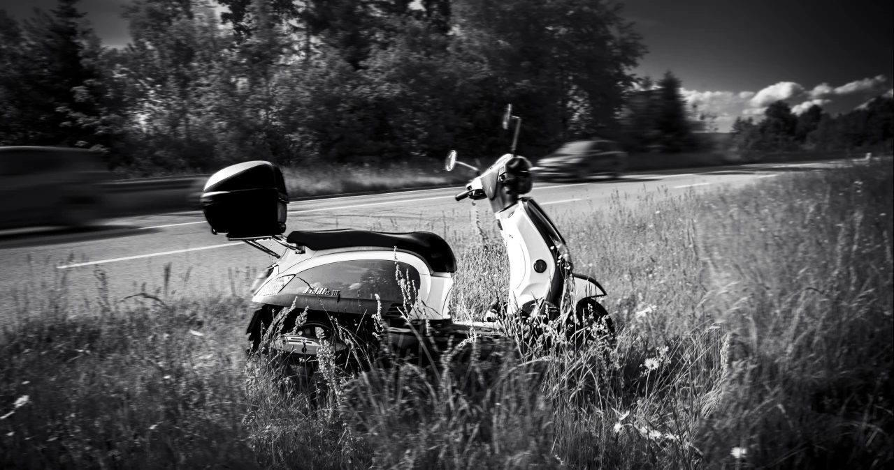
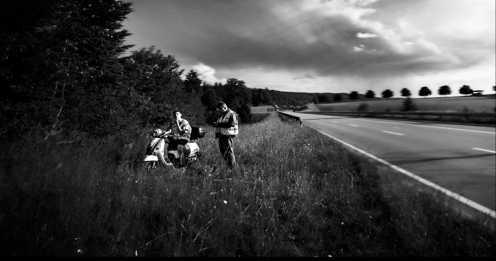
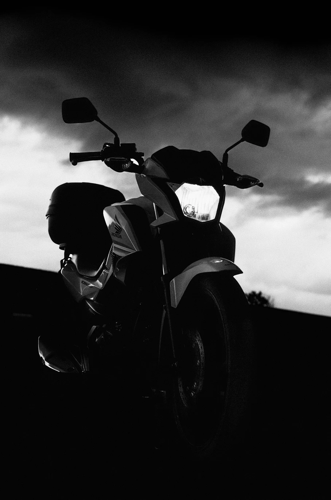

Le défi de ce projet était de mettre des mots en cohérence avec
un ressenti, afin qu’il puisse être compris.
Je me suis appuyée sur des images contrastées, du sound design
et du texte pour donner encore plus d’impact. Notamment sur le
travail du son, où j’ai vraiment essayé de retranscrire ce
mélange d’émotions : les voix qui semblent très loin, le
battement du cœur qui s’aligne sur le rythme des clignotants, le
flou...
Image réalisée avec un Canon 5D mark iii, puis traité dans
Premiere pro et After effect.
Ce projet, ça à été façon pour moi de cacher ma peur.